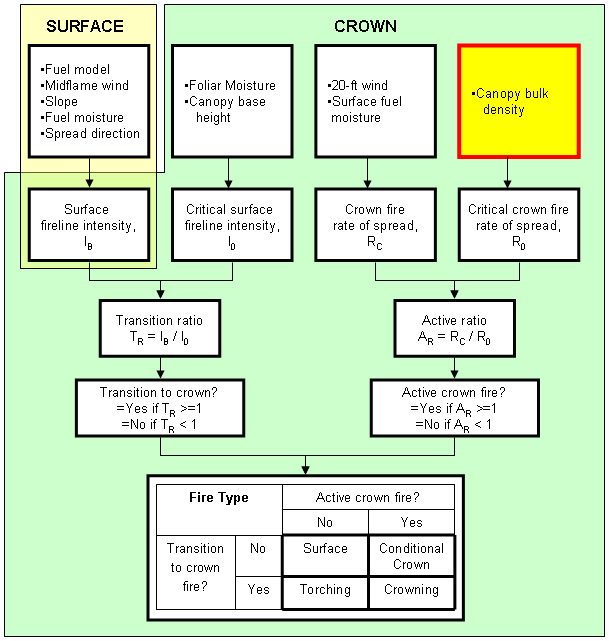

|
Canopy Bulk Density |
Canopy bulk density is a stand description of weight of canopy fuels per unit of canopy volume (lb/ft3 or kg/m3). It is used to calculate critical crown fire rate of spread to determine the threshold for achieving active crown fire (Van Wagner 1977).
I/O |
Module |
If |
Notes |
| Input | CROWN | ||
| Output | None |
Stereo photographs, hemispherical photographs, and stand data are available with associated biomass and canopy fuel characteristics for five Interior West conifer stands, including:
Canopy bulk density, canopy base height, canopy biomass by component, available canopy fuel load, and vertical distribution of canopy fuel are presented for each plot at several stages of sampling, each corresponding to a level of simulated low thinning (100, 75, 50, and 25 percent of the initial basal area). Further information to help fuel managers estimate canopy fuel characteristics in similar forest conditions can be found in the paper:
Scott, Joe H.; Reinhardt, Elizabeth D. 2005. Stereo photo guide for estimating canopy fuel characteristics in conifer stands. Gen. Tech. Rep. RMRS-GTR-145. Fort Collins, CO: U.S. Department of Agriculture, Forest Service, Rocky Mountain Research Station. 49 p. plus stereoscope.
|  |
 |